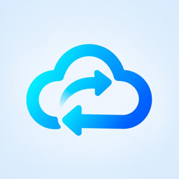
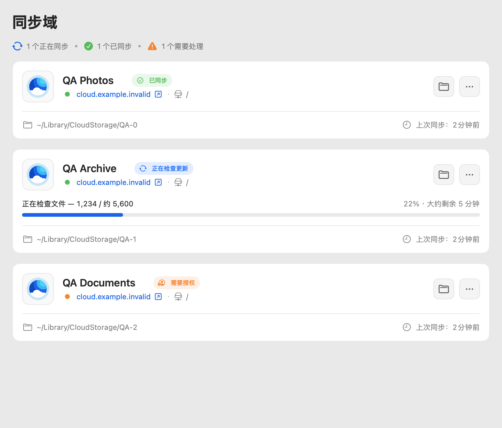

Finder 里，真正的位置
每个同步域都出现在 Finder 侧边栏。用你常用的 Mac 应用打开和编辑文件。

NimbusSync为你的 Mac，接上 Cloudreve
文件留在自己的云端，工作留在熟悉的 Finder。浏览、打开、编辑，剩下的交给 NimbusSync。
macOS 13+ · Apple 芯片与 Intel · 免费开源
不用适应另一套工作台。你熟悉的文件夹和应用，现在就能继续用。
每个同步域都出现在 Finder 侧边栏。用你常用的 Mac 应用打开和编辑文件。
浏览远端目录，无需先下载所有内容。打开文件时按需下载，macOS 也能按需释放本地空间。
待同步的修改会保存在磁盘上。断网或重启之后，从已保存的状态继续处理。
编辑时远端文件也发生变化？NimbusSync 会在原文件旁保留你的冲突副本。
通过 OAuth 与 PKCE 授权，令牌保存在 Mac 钥匙串中，服务器连接使用 HTTPS。
在菜单栏查看同步状态、最近活动和进度，重试失败的任务，集中管理同步域。
文件是工作的主角。NimbusSync 常驻菜单栏，需要时再打开设置，查看每个同步域的状态。

准备好一台 Mac，以及可通过 HTTPS 访问的 Cloudreve 4.12+ 服务器。
从 GitHub Releases 下载 DMG，将 NimbusSync 拖入「应用程序」后打开。
在菜单栏选择「添加同步域」，输入服务器地址，在浏览器中完成授权。
在 Finder 侧边栏的「位置」中找到同步域，像平常一样浏览和编辑文件。
需要 macOS 13 Ventura 或更新版本。通用二进制同时支持 Apple 芯片与 Intel。服务器需要 Cloudreve 4.12+，并提供 HTTPS 访问。
不需要。通过 Apple File Provider，你可以先浏览远端目录，打开时再下载文件。需要离线工作时，请提前下载所需文件；重新联网后会同步修改。
你会通过浏览器登录自己的 Cloudreve 服务器。NimbusSync 将令牌保存在 macOS 钥匙串中，日志不记录令牌、签名 URL 或文件内容。
NimbusSync 通过 Sparkle 每天检查更新，也可以在设置中手动检查。自动下载与安装默认关闭，可自行开启；测试版可在单独的设置项中选择接收。
是的。NimbusSync 免费开源，使用 Apache 2.0 许可证。你可以查看源码，或在 GitHub 提交问题。Cloudreve 是独立项目，使用其自身的许可证。
把你的 Cloudreve，带进 Finder。
下载 NimbusSync项目仍处于早期阶段，请为重要文件保留独立备份。